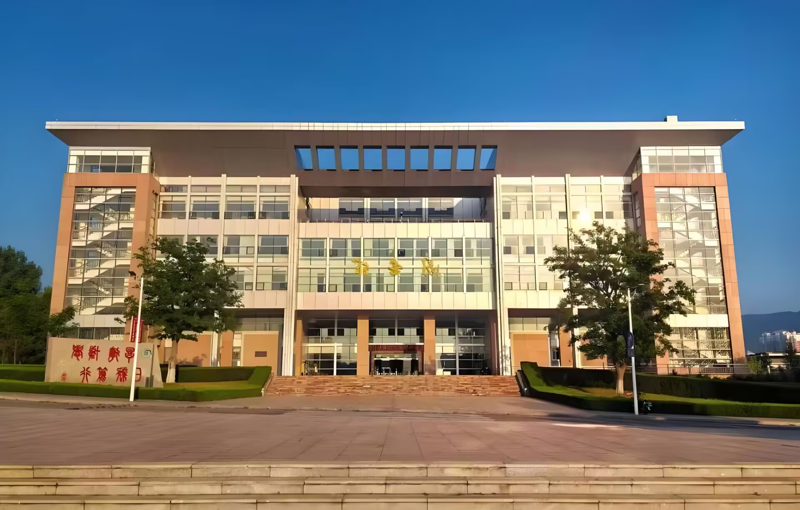
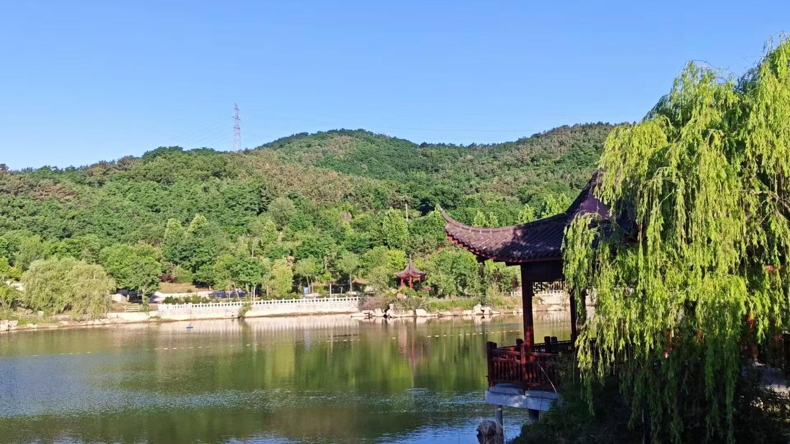

春风拂过鲁东大学的校园，处处皆是生机盎然的盛景，漫步在校园的林荫小道上，满眼的绿意与繁花交织成一幅动人的画卷。校园内的树木抽出嫩绿的新芽，垂柳依依，枝条轻拂着镜心湖面，桃花、杏花、玉兰花竞相开放，粉白相间的花瓣随风飘落，像是给地面铺上了一层柔软的花毯。清晨的阳光穿过枝叶的缝隙，洒下斑驳的光影，走在这样的环境中，能感受到独属于春日的清新与惬意，微风中夹杂着花草的清香，让人心旷神怡，所有的烦恼都仿佛被这温柔的春风吹散。镜心湖碧波荡漾，清澈的水面倒映着蓝天、白云与岸边的绿树，偶尔有小鱼在水中欢快地游动，泛起一圈圈涟漪，湖边的凉亭下，总有学子安静地看书，人与自然和谐相融，构成了鲁东大学最温柔的春日风景。每一处角落都藏着别样的美好，无论是宽阔的操场边，还是静谧的教学楼旁，亦或是书香弥漫的图书馆前，春日的美景无处不在，让每一位身处其中的鲁东人都能感受到校园的灵动与温婉，这是独属于鲁东大学的春华之美，清新、雅致且充满生命力。
春日的鲁东大学，不仅有花草树木的自然之美，更有四季常青的绿植与错落有致的景观设计，让整个校园宛如一座精致的园林。蜿蜒的小路连接着教学楼与宿舍区，道路两旁的绿植错落分布，高低相间，既有高大的乔木遮阴纳凉，又有低矮的灌木点缀色彩，一步一景，美不胜收。春雨过后的校园更是清新脱俗，泥土的芬芳与草木的清香混合在一起，深吸一口气，满是自然的气息。雨水打湿了花瓣与叶片，让一切都显得格外鲜亮，枝头的鸟儿欢快鸣叫，为校园增添了无限生机。在这里，我们能真切地感受到大自然的馈赠，春日的暖阳、轻柔的微风、盛开的繁花、清澈的湖水，共同勾勒出鲁东大学无与伦比的自然风光，也让我们在学习之余，能够放松身心，沉浸在这如画的美景之中，感受校园带给我们的温暖与美好，这份独有的春日景致，成为了每一位鲁东学子心中最珍贵的记忆。

